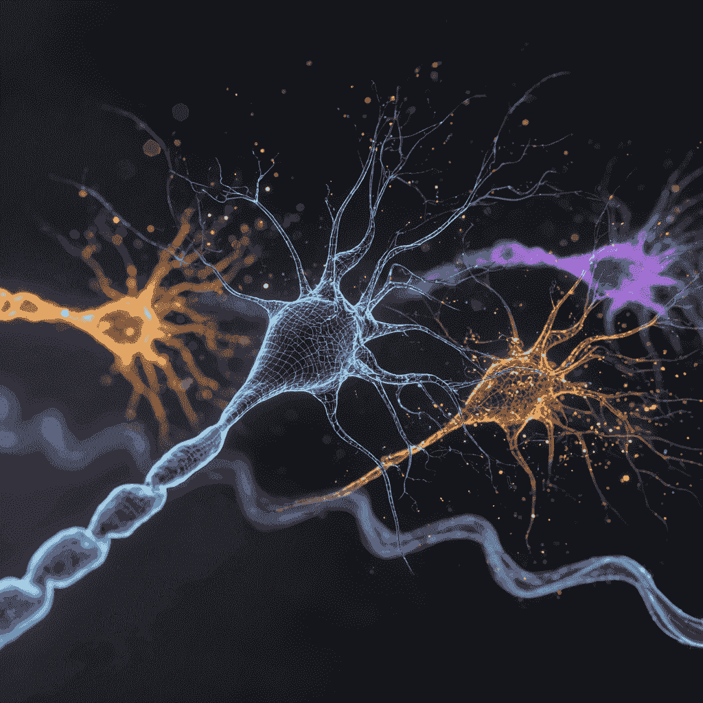

Mathematical Formalization of Working Memory in Neural Networks
Modeling Proteins Involved in Alzheimer\'s Disease

Improving Genetic Profiling at the Scientific Police Laboratory

LLM-Guided Reinforcement Learning to Mimic Human Intelligence

Probabilistic Modeling of Semi-Arid Ecosystems and Emergence of Spatial Structures